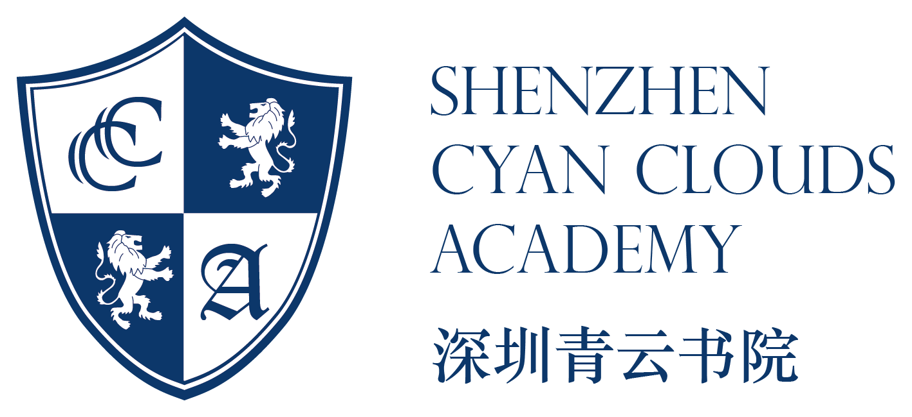
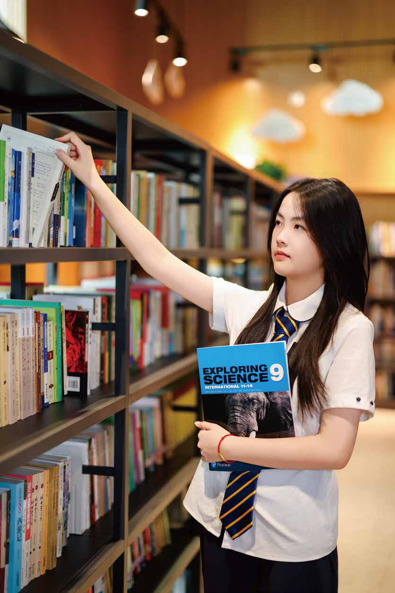
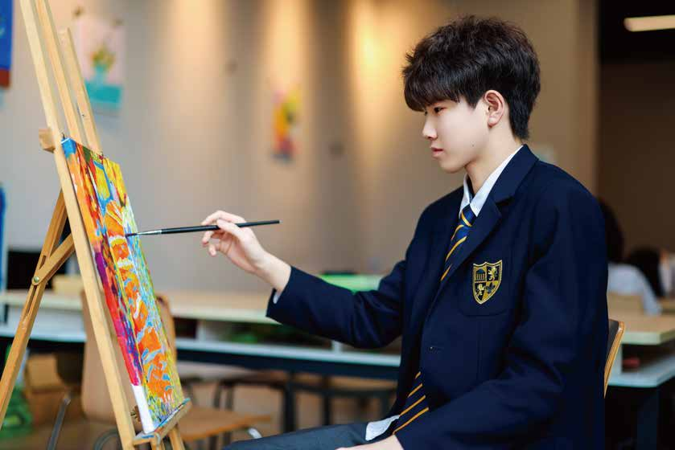

启发式的相关学习
学生通过真实问题、跨学科项目和展示表达，把知识与现实世界联系起来。


 Principal's
Principal's来自青云书院初中部校长室
Principal's Message
“我们期待学生来到青云，不只是完成课程，而是在阅读、表达、项目和社群生活中，逐渐理解为什么学习，也学会把一个想法踏实地做出来。”继续看学生故事
Qingyun AI School
我们把 AI 素养放进语言、人文、数学、科学与项目学习中。学生学习使用工具，也学习识别偏差、核验来源、解释选择，并对最终作品负责。
Who We Are
初中阶段，学生的自我意识、学习习惯和同伴关系都在迅速形成。青云书院初中部不以单一标准定义成长，而是在安全、尊重与高期待并存的环境里，让学生通过真实学习、稳定关系和公开表达，逐渐建立自己的内在尺度。
让知识走出课本，进入真实议题、公共表达和可以被看见的作品。
让好奇心成为长期学习的动力，让学生愿意提问、尝试、选择，也承担结果。
1:5高关注师生比
90%教师拥有硕士及以上学历
50+多元社团与主题活动
青云书院初中部融合 CCSS 与爱德思 iLower Secondary 的课程结构，以阅读、概念、项目和表达作为学习主线。学生不只是知道知识点，而是能解释、迁移、质疑，并把理解转化为作品。
完整课程与学科设置我们的教师侧重于启发式的实践学习，通过各年级的社区联结、项目探究和双语表达训练，增强学生的独立性和责任感，尽可能满足每个学生的需求，使他们能够在复杂而充满多样性的世界中茁壮成长。
学生通过真实问题、跨学科项目和展示表达，把知识与现实世界联系起来。
通过双语课堂、导师支持和社区活动，学生逐渐建立清晰表达、合作与自我管理能力。
面向 G7-G8，课程覆盖中英语言文学、数学、科学、社会学、STEAM、国际视野、艺术、音乐、体育、SEL、导师课与社团。
查看课程体系面向 G9X 与 G10X，承接更高阶段的国际课程、学术挑战与升学准备。
One of School 个性化路径，强调一人一案、导师陪伴和个人成长方案。
Curriculum Highlights
我们不希望学生只会在试卷上反应迅速，更希望他们面对陌生问题时能保持好奇、抓住概念、组织证据并完成表达。阅读、讨论、实验、项目和展示，共同构成青云书院初中部的学习节奏。
在经典文本、真实议题与跨文化材料中积累知识，保护好奇心。
摆脱低效机械笔记，理解知识本质，形成举一反三的能力。
把知识带入社会挑战、科学课题与作品展示，成为未来解决者。
A Day at Qingyun
数学、科学、人文与语言不再分散，而是在项目问题中相互连接。
演讲、辩论、写作工作坊和展示，让学生的想法被听见。
运动、艺术、科技与公益活动，让学生练习合作、领导与责任。
School Life in Motion
阅读、运动、艺术、项目与同伴关系构成青云书院初中部的日常。学生在不同场景里练习专注、表达、协作、审美、体能和行动力。




Campus Lens
阅读、科创、音乐、艺术、体育和校园空间共同构成青云书院的日常。学生在不同场景里学习、表达，也在一次次参与中形成自己的节奏。
Information Session
开放日将安排课程说明、校园参观、学生作品展示和招生咨询，帮助家庭判断青云书院初中部、凌云书院与青云书院是否匹配孩子的发展节奏。
预约开放日Qingyun Academy Middle School
Faculty & Advisory
青云书院初中部由双语学科教师、国际化课程教师、导师与学生发展团队共同支持学生。概念理解、表达训练、项目成果和持续反馈，共同构成学生每天可以感受到的支持。
初中阶段的教学重点不是提前高中化，而是帮助学生建立可迁移的学习方法：如何阅读、如何提问、如何合作、如何表达自己的判断。
负责中英双语学术基础，帮助学生把中文理解力与英文表达力连接起来。
在科学、人文、数学与项目学习中引入国际课堂的讨论、研究与展示方式。
围绕目标设定、学习习惯、情绪支持、家校沟通与升学意识进行长期陪伴。
Academies
初中部奠定学习方式，凌云书院衔接更高阶段的学术挑战，青云书院为需要个性化节奏的学生提供 One of School 成长路径。
面向国际高中衔接的学术强化班，重点建立英文写作、数学科学、项目研究与国际课程学习习惯。
更接近国际高中标准的进阶项目，适合需要高阶课程、竞赛方向和升学规划节奏的学生。
青云书院强调个人学校式成长方案，把学生兴趣、导师资源、项目成果和长期目标放进同一张成长地图。
社团不是课后装饰，而是学生练习领导力、合作与表达的真实场景。
项目展、艺术展演与学生论坛，让共同学习拥有真实观众和公开表达的时刻。
Student Stories
“导师课让我更敢说自己卡在哪里，也更知道下一步怎么做。”
“我以前只想做对题，现在会先问这个问题为什么重要。”
“孩子开始主动讲项目进度，我们看到的是学习方式的变化。”
Campus Film
Tuition & Fees
以下信息来自 2026-2027 初中部招生简章。最终缴费安排以学校正式录取文件和财务通知为准。
入学测试考试费 800 元，一经缴纳不予退还。
学费不包含校车费、住宿费、餐费、国际考试费、外出实践、出国游学、海外签证等第三方收取费用。
Apply to Qingyun
填写申请意向后，招生团队将根据年级、课程适配和家庭需求安排探校、评估与沟通。
Admissions Process
申请流程从预约测试开始，经过英文、数学 MAP 机考及全英文面试，三个工作日内反馈录取结果；确认学位后完成报到注册，开启青云书院旅程。
与招生办公室预约入学测试，并缴纳考试费 800 元。
完成英文、数学 MAP 机考，以及全英文面试。
提交原学校学习报告或成绩单，可补充获奖证书及特长证明。
三个工作日查询结果，录取后确认学位、缴纳学费并完成报到注册。
FAQ
适合希望在初中阶段建立双语学术能力、国际化学习习惯、表达能力和项目经验的 G7-G8 学生。
凌云书院面向 G9X、G10X，承接更高阶段的国际课程、学术挑战和升学准备。
它是更个性化的成长路径，通过导师、课程资源、项目成果和个人目标，形成一人一案的学习方案。